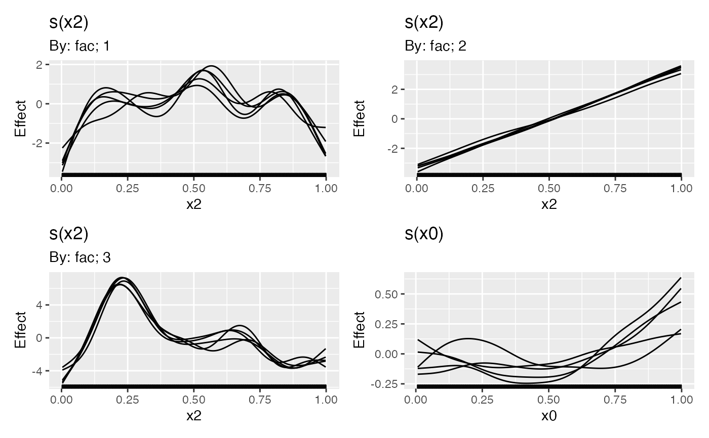

Returns draws from the posterior distributions of smooth functions in a GAM. Useful, for example, for visualising the uncertainty in individual estimated functions.
smooth_samples(model, ...)
# S3 method for gam
smooth_samples(
model,
term = NULL,
n = 1,
newdata = NULL,
seed = NULL,
freq = FALSE,
unconditional = FALSE,
ncores = 1L,
n_vals = 200,
...
)| model | a fitted model of the supported types |
|---|---|
| ... | arguments passed to other methods. For |
| term | character; select which smooth's posterior to draw from.
The default ( |
| n | numeric; the number of posterior samples to return. |
| newdata | data frame; new observations at which the posterior draws
from the model should be evaluated. If not supplied, the data used to fit
the model will be used for |
| seed | numeric; a random seed for the simulations. |
| freq | logical; |
| unconditional | logical; if |
| ncores | number of cores for generating random variables from a
multivariate normal distribution. Passed to |
| n_vals | numeric; how many locations to evaluate the smooth at if
|
A tibble with additional classes "smooth_samples" and
`"posterior_samples".
For the "gam" method, the columns currently returned (not in this order)
are:
smooth; character vector. Indicates the smooth function for that
particular draw,
term; character vector. Similar to smooth, but will contain the
full label for the smooth, to differentiate factor-by smooths for
example.
by_variable; character vector. If the smooth involves a by term, the
by variable will be named here, NA_character_ otherwise.
row; integer. A vector of values seq_len(n_vals), repeated if
n > 1L. Indexes the row in newdata for that particular draw.
draw; integer. A vector of integer values indexing the particular
posterior draw that each row belongs to.
value; numeric. The value of smooth function for this posterior draw
and covariate combination.
.xN; numeric. A series of one or more columns containing data required
for the smooth. .x1 will always be present and contains the values of
the covariate in the smooth. For example if smooth is s(z) then
.x1 will contain the values of covariate z at which the smooth was
evaluated. Further covariates for multi-dimensional thin plate splines
(e.g. s(x, z)) or tensor product smooths (e.g. te(x,z,a)) will
result in variables .x1 and .x2, and .x1, .x2, and .x3
respectively, with the number (1, 2, etc) representing the order
in which the covariates were specified in the smooth.
Additional columns will be present in the case of factor by smooths,
which will contain the level for the factor named in by_variable for
that particular posterior draw.
The set of variables returned and their order in the tibble is subject to change in future versions. Don't rely on position.
Gavin L. Simpson
load_mgcv()
# \dontshow{
set.seed(2)
op <- options(cli.unicode = FALSE)
# }
dat <- gamSim(1, n = 1000, dist = "normal", scale = 2)
#> Gu & Wahba 4 term additive model
m1 <- gam(y ~ s(x0) + s(x1) + s(x2) + s(x3), data = dat, method = "REML")
smooth_samples(m1, term = "s(x0)", n = 5, seed = 42)
#> # A tibble: 1,000 x 7
#> smooth term by_variable .x1 row draw value
#> <chr> <chr> <chr> <dbl> <int> <int> <dbl>
#> 1 s(x0) s(x0) NA 0.000663 1 1 -0.961
#> 2 s(x0) s(x0) NA 0.00568 2 1 -0.933
#> 3 s(x0) s(x0) NA 0.0107 3 1 -0.906
#> 4 s(x0) s(x0) NA 0.0157 4 1 -0.878
#> 5 s(x0) s(x0) NA 0.0207 5 1 -0.850
#> 6 s(x0) s(x0) NA 0.0258 6 1 -0.822
#> 7 s(x0) s(x0) NA 0.0308 7 1 -0.795
#> 8 s(x0) s(x0) NA 0.0358 8 1 -0.768
#> 9 s(x0) s(x0) NA 0.0408 9 1 -0.740
#> 10 s(x0) s(x0) NA 0.0458 10 1 -0.713
#> # ... with 990 more rows
## A factor by example (with a spurious covariate x0)
set.seed(2)
dat <- gamSim(4)
#> Factor `by' variable example
## fit model...
m2 <- gam(y ~ fac + s(x2, by = fac) + s(x0), data = dat)
sms <- smooth_samples(m2, n = 5, seed = 42)
draw(sms)

options(op)